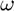
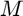
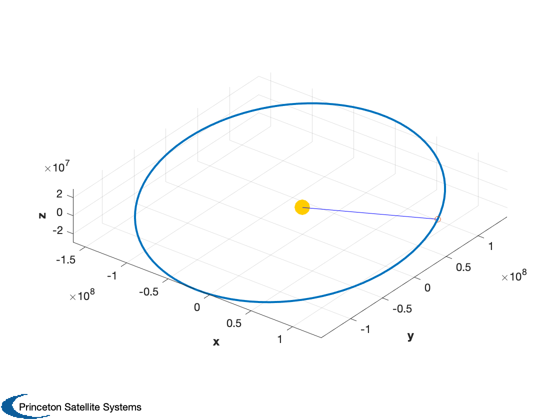
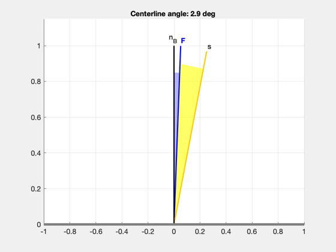
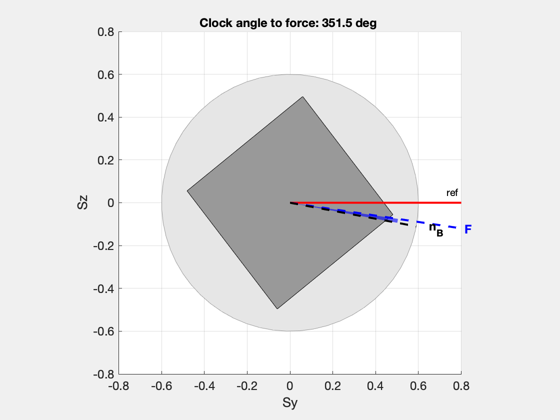
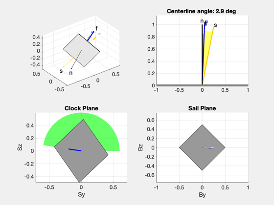

Demonstrate sail force plotting functions.
Use a nontrivial heliocentric orbit and random cone and clock angles.
Since version 7. ------------------------------------------------------------------------ See also PlotSailForce2D, PlotSailClock2D, ConeClockToU, Constant, Plot3D, Unit, El2RV, RVFromKepler, QSail, SailForceSubplots ------------------------------------------------------------------------
Contents
%------------------------------------------------------------------------------- % Copyright (c) 2009 Princeton Satellite Systems, Inc. %-------------------------------------------------------------------------------
Heliocentric orbit
Set an orbit with nontrivial inclination and eccentricity. Elements are [$a$  ]
el = [Constant('au') 0.2 0 0 0.1 0.3]; % Get the Cartesian position and velocity [r,v] = El2RV(el); % The sun vector is just -rHat s = -Unit(r); % Create a plot of the entire orbit Plot3D(RVFromKepler(el)) hold on plot3(r(1),r(2),r(3),'o') plot3([0 r(1)],[0 r(2)],[0 r(3)],'b') sun = plot3(0,0,0,'yo','markersize',15); set(sun,'color',[1 0.8 0],'MarkerFaceColor',[1 0.8 0]) % Select a reference frame for measuring the angles qRef = QSail( s, r, v, -1 );
Select random cone and clock angles
Specify a cone angle in the neighborhood of 30 degrees and a clock angle anywhere from 0 to 360 degrees. Use the cone and clock as steering angles for the sail normal. Assume the force vector is "inside" the normal (smaller cone angle) and slightly out-of-plane (slight difference in clock angle).
cone = pi/6 + randn*0.2; clock = rand*2*pi; fprintf('Cone angle is %2.2f deg\n',cone*180/pi); fprintf('Clock angle is %2.2f deg\n',clock*180/pi); n = -ConeClockToU( cone, clock, qRef ); dClock = 0.05*randn; disp(dClock*180/pi); f = ConeClockToU( 0.8*cone, clock+dClock, qRef );
Cone angle is 14.53 deg
Clock angle is 349.41 deg
2.0781
Plot the cone angle looking along the sail plane
Create a 2D plot of the force, normal, and sun vectors.
PlotSailForce2D( f, n, s )
Plot clock angle
PlotSailClock2D( f, n, [], qRef )
Combination plot
SailForceSubplots( f, n, s, qRef )
This is a demo of the Solar Sail Module for the Spacecraft Control Toolbox. For more information, see our Web site: http://www.psatellite.com/sct

%--------------------------------------